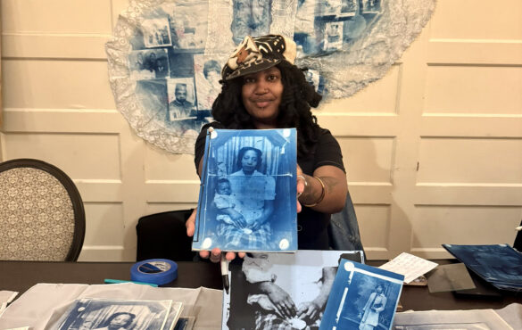

Harlem Masimba West Artist Talk
Join us at Spudnik Press for an artist talk with Harlem Masimba West on June 3 at 6 PM. During the talk, West will speak about their residency work exploring memory, archival image-making, and movement throughout Chicago through cyanotype and mixed-media collage.
Centering an evolving oracle and playing card deck built from inherited photo archives and personal histories, West’s practice considers how images can hold reverence, revision, and alternate ways of remembering. The conversation will focus on their process, research, and ongoing experimentation with analog media during their time at Spudnik Press.
Harlem Masimba West is a playground, sonic griot, and archival imagemaker from Out South Chicago. Anchored in analog media, their work centers the crossroads and portals that find Black folks. They’re presently the 2026 Curatorial Resident at Elastic Arts, and artist in residence at Spudnik Press, ILA, and the Kimball Arts Center.